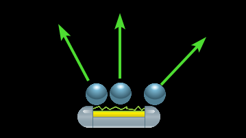

6. Der Ball¶
Ziele
In diesem Kapitel wirst das Objekt für den Ball erstellen und ihn so programmieren, dass er von den Wänden und dem Balken abprallt.
6.1 Objekt erstellen¶
Erstelle ein neues Objekt mit dem Namen "obj_Ball" und gib ihm das Sprite für den Ball. Füge eine Instanz von Ball in den room0 ein.
6.2 Bewegung starten¶
Ziel
Der Ball soll sich zu Beginn des Spiels schräg nach rechts oder links oben bewegen.
Füge dafür ein neues Ereignis "Erstellen" hinzu. (Dieses Ereignis wird ausgeführt, wenn die Instanz des Objekts erstellt wird)
Suche unter Bewegung den Befehl Zufällige Richtung festlegen und füge ihn ein. Du kannst nun einstellen, welche Richtungen zugelassen sind. Wähle die Richtungen Oben-Links und Oben-Rechts aus.
Füge danach den Befehl Geschwindigkeit festlegen ein und gibt bei Typ Richtung ein und stelle die Geschwindigkeit auf einen Wert zwischen 5 und 10 (Je schneller, desto schwieriger wird das Spiel)
Das Ereignis sollte nun in etwa so aussehen:

6.3 Kollision mit den Wänden¶
Seitenwände
Ziel
Wenn der Ball eine der Wände berührt, so soll er abprallen. Dies funktioniert folgendermaßen: Wenn der Ball eine Seitenwand berührt, so muss die Richtung einfach nur in horizontaler (seitlicher) Richtung umgekehrt werden.
Hierfür gibt es unter Bewegung praktischerweise den Befehl Umkehren und das Ganze soll immer dann passieren, wenn der Ball mit einer Seitenwand kollidiert.
Füge dem Ball also ein neues Ereignis vom Typ Kollision mit obj_WandSeite hinzu. Suche unter Bewegung den Befehl Umkehren und füge ihn dem Ereignis hinzu und wähle bei Horizontal aus.
Das sollte nun folgendermaßen aussehen:

Wand Oben
Für die obere Wand funktioniert die Kollision genau gleich, nur dass diesmal die Richtung nicht Horizontal umgekehrt wird, sondern Vertikal (also von Oben nach Unten)
Erstelle dafür ein neues Kollisionsereignis mit obj_WandOben und füge den Befehl Umkehren mit Richtung: Vertikal ein.
Teste nun dein Programm und der Ball sollte von den Wänden abprallen. Allerdings fällt er nach wie vor durch den Balken durch.
6.4 Kollision mit dem Balken¶
Die Kollision mit dem Balken funktioniert etwas anders:
Ziel
Je nachdem wo der Ball am Balken aufkommt, soll er in eine andere Richtung abprallen. (Das entspricht zwar nicht wirklich allen Regeln der Physik, macht spieltechnisch aber mehr Spaß)
Der Winkel in dem der Ball vom Balken abprallt, soll also nicht von der Richtung des Balls davor abhängen, sondern nur von der Position vo der Ball mit dem Balken kollidiert.

Erstelle ein neues Ereignis Kollision mit obj_Balken und füge den Befehl Variable Richtung festlegen ein. Um die neue Richtung des Balls zu bestimmen wollen wir einfach die Richtung vom Mittelpunkt des Balkens zum Mittelpunkt des Balls verwenden.

Zur Berechnung dieser Richtung können wir die Funktion point_direction(x1,y1,x2,y2) verwenden. Diese Funktion berechnet die Richtung von einem Punkt (x1,y1) zu einem anderen Punkt (x2,y2)
Position eines Objekts in Gamemaker
Die Position eines Objekts in Gamemaker wird in den Variablen x und y gespeichert. Das Schlüsselword other in einem Kollisionsevent ist immer eine Referenz auf das Objekt mit dem die Kollision stattfindet.
Also:
x und y sind also die Koordinaten des Objekts, von dem aus das Ereignis ausgeführt wird.
other.x und other.y sind die Koordinaten des Objekts mit dem die Kollision stattfindet.
Um nun die neue Richtung zu bestimmen füge den Befehl "point_direction(other.x,other.y,x,y)" in den Befehl Variable Richtung festlegen ein.
Das sollte folgendermaßen aussehen:
Teste dein Spiel!